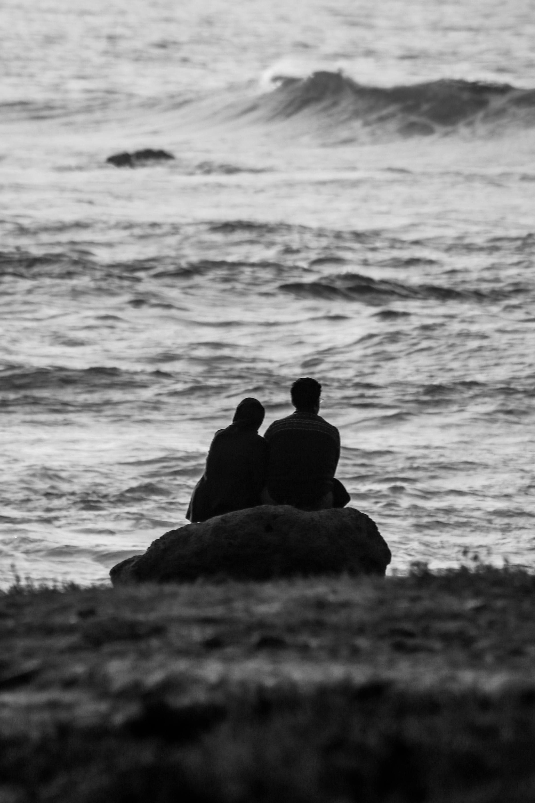

Populaire
Marrakech ocre
La ville rouge envoûte au premier regard. Palais Bahia, jardins Majorelle, Jemaa el-Fna animée jusqu'à l'aube — Marrakech est une fête permanente des sens.

Du bleu de Chefchaouen aux dunes de Merzouga, chaque lieu du Maroc raconte une histoire. Laquelle vous appelle ?
8 destinations trouvées
La ville rouge envoûte au premier regard. Palais Bahia, jardins Majorelle, Jemaa el-Fna animée jusqu'à l'aube — Marrakech est une fête permanente des sens.

La plus ancienne ville universitaire du monde. Tanneries Chouara, médersas en zellige et artisanat millénaire.

Ruelles peintes en bleu et blanc, air de montagne et ambiance hors du temps dans le massif du Rif.
Nos conseillers conçoivent votre itinéraire sur mesure en moins de 24h, selon vos envies et votre budget.

À 40 km de Marrakech, un désert de pierres aux allures lunaires. Nuits étoilées, dîner sous tente et silence absolu.

La cité des alizés conjugue architecture portugaise, musique gnawa et fruits de mer sur les remparts. Une ville-tableau.

Les grandes dunes de sable doré du Sahara. Balade en dromadaire, lever de soleil flamboyant et campements de luxe.

La capitale cultive l'élégance discrète : kasbah des Oudaïas, Tour Hassan, mausolée Mohammed V et une médina apaisée.

Ksar fortifié classé UNESCO, décor de Gladiator, Game of Thrones et Lawrence d'Arabie. Un village hors du temps.
Aucune destination trouvée pour ce filtre.
Essayez une autre région.
Chaque destination mérite un accompagnement à la hauteur de ses trésors.
Chaque voyage est conçu uniquement pour vous, selon vos envies, votre rythme et votre budget.
Nos guides locaux sont passionnés, bilingues et experts de leur région.
Transports, hébergements, réservations — nous gérons tout, vous profitez.
Un conseiller dédié disponible avant, pendant et après votre voyage.